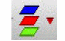

Shorting Layers for LRP Analysis
While computing LRP for a node or instance, you can short specific layers. When you do this, all resistors on the specified layer are shorted, that means, the LRP has a value of 0 for all resistors on the shorted layer.
When you click Shorted Layers  , a pop-up window opens displaying the list of layers. In this window, select the layer you want to short and click Compute LRP. You can short multiple layers. Each time the list of shorted layers is modified, click Compute LRP to recalculate LRP.
For example, in the image below, layer Metal2 is shorted.
When a layer is shorted, the layer information for the shorted layer is not displayed in the resistance path table. For example, in the image below, the resistance value for node AVDD:166 is included before shorting Metal2:
After Metal2 is shorted, the node AVDD:166 is not displayed in the table:
Related Topics
- The Voltus-XFi Results Browser Graphical User Interface
- Performing LRP Analysis
- Visualizing EM-IR Analysis Results using Voltus-XFi Results Browser
Return to top